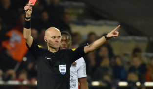

The bases
- Match duration: And football match lasts 90 minutes, which takes place in two parts called “two halves” which each last 45 minutes, with a 15 minute break between the two which is not included in the 90min of games
- Objective : Score more goals than the opponent by sending the ball into the opponent's goal. Whoever has the most goals wins the match.
- Number of players: Each team has 11 players on the field, including a goalkeeper. So 10 on the field of play and the goalkeeper
The main rules
The ball in play and out of play
- The ball is "in play" as long as he has not completely crossed the sidelines or goal lines.
- The ball is "offside" when it crosses completely these lines.
Offside at player level
- A player is considered “offside” when he is between the last defender and the goalkeeper and receives the ball from a teammate of his. Offside is not counted if the person attacking is in their part of the field.
- If the attacker is in position and it is an opponent who passes him, “offside” is not taken into account because it is not not his teammate who passes him.
- It is not an offense to be in an offside position unless the player is primarily involved in the action.

Mistakes and behavior antisportif
- A foul is called when a player pushes, charges, hits, or plays dangerously.
- Unsportsmanlike behavior (protests, simulation, etc.) may result in warnings (yellow card) or expulsion (red card). If the same player receives two yellow cards in the same match he automatically receives a red card so he is excluded and his team plays with 10, the player is not allowed to be replaced.

Playing with hands
- Only the guardian can use his hands, and only in his penalty area. Other players cannot touch the ball with their hands or arms intentionally, otherwise they will be punished depending on how it happened
Set pieces
Free kick (free shot outside the area)
- Awarded after a foul outside the area.
- Perhaps direct (you can shoot directly at goal) or indirect (another player must touch the ball before a shot).
- During a free kick, the goalkeeper is authorized to put up a wall to obstruct the person taking the free kick.
Penalty
- Awarded when a foul is committed in the goalkeeper's penalty area.
- Shot from the penalty spot, 11 meters from the goal, with no wall present.
Corner kick (corner)
- Awarded when the ball crosses the goal line, after being last touched by a defender, without a goal having been scored.

Touch
- If the ball goes out through a sideline, the opposing team takes a throw-in with their hands, with their feet behind the line

Important technical rules
Advantage rule
- The referee may allow play to continue after a foul if the victim team maintains a favorable situation.
Additional time
- The referee may add time at the end of each half to compensate for interruptions that may be made due to fouls, goals, substitutions, injuries. This will allow us to get as close as possible to 45 minutes of half-time.
Replacements
- A team can make a certain number of substitutions (3 to 5 depending on the competition). Replaced players cannot return to the field until the end of the match.
Defensive walls
- During a free kick, opposing players must stand at least 9.15 meters from the ball, forming a wall to obstruct the opponent's shot.
The ban on voluntary returns to the guard
- A goalkeeper cannot take the ball in his hand if a teammate has passed it to him. voluntarily with the feet, if his teammate passes him with his head there he can take the ball from his hands.
Specific regulations
Var (Video Assistance to the Referee)
- Used to check important decisions (goal, penalty, red card, etc.).
Penalty area
- Specific rules (penalty, goalkeeper restarts) only apply in this zone.
Wall positions offensive
- Players of the attacking team cannot integrate into the defensive wall on a free kick.